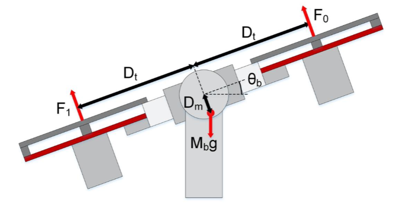

System Description & Objectives
The Quanser Aero is a two-degree-of-freedom laboratory platform that mimics the pitch and yaw dynamics of a helicopter body. Two brushless DC motors drive propellers mounted at the ends of a rigid arm; the resulting thrust forces create moments about the pitch axis (elevation) and the yaw axis (travel). The platform is instrumented with encoders on both axes and connects to a host PC through QUARC real-time software, which closes the control loop in hardware at millisecond sampling rates. Because the aerodynamic coupling, inertia, and motor dynamics are all present, the Quanser Aero provides a physically meaningful testbed for classic control techniques well beyond pure simulation.
This project focused exclusively on the pitch axis. The objectives were:
- Characterize the open-loop pitch response and extract key transient parameters (ωn, ζ, settling time)
- Systematically study the individual effects of proportional, derivative, and integral control action on response speed, damping, and steady-state error
- Tune a PID controller to meet design requirements: peak pitch ≤ 0.35 rad and peak time < 1.1 s for a 0.3 rad square-wave command
- Develop a second-order plant model from experimental data and use it to calculate PID gains analytically, then compare with the tuned controller
- Evaluate closed-loop stability margins using Bode analysis in MATLAB

